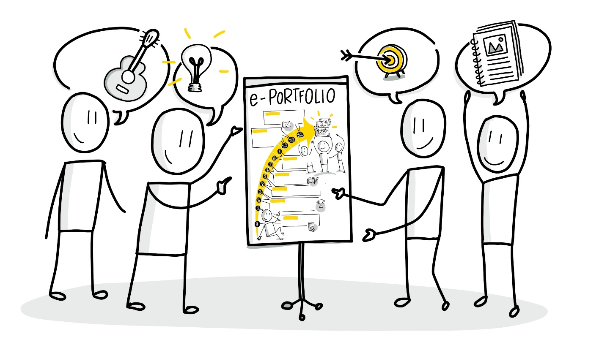

Lernbereich 1 - Kennenlernen
Lernbereich 1 - Kennenlernen
Circle-Mitglieder und ePortfolio-Methode kennenlernen bzw. Wissensstand untereinander checken und Beispiele anschauen – Mehrwerte erkennen (Wochen 0-1)
Struktur: Woche 0 - A) Kennenlernrunde und Intention des Circles - B) Besprechung des Circle-Lernpfads über die 12 Wochen - C) Zukünftiger Austausch-Rahmen (Zeit und Tool-Nutzung) sowie ggf. Erwartungshaltung Erste kurze Basic-Kata
Woche 1 - D) Gemeinsames Grundverständnis der ePortfolio-Methode und -Ansätze - Grundlagen durchgehen - E) Erwartungshaltung vorstellen und mit Grundverständnis abgleichen - F) Themeninteresse andeuten und erste Gemeinsamkeiten erkennen Empfohlene Basic-Kata und mögliche Vertiefungs-Kata sowie erste optionale Video-Kata

Week 0 - Kennenlernrunde
A) Kennenlernrunde und Intention des Circles | (ca. 25 Minuten) Herzlich Willkommen zum ePortfolio-Learning Circle Guide! Großartig, dass Ihr Euch hier zusammengefunden habt und diese neue Lernmethode kennenlernen wollt! Nehmt Euch nun zu Beginn erstmal genügend Zeit, Euch gegenseitig vorzustellen. Wer seid Ihr, womit beschäftigt Ihr Euch in Eurer täglichen Arbeit und woran habt Ihr besonderes Interesse oder wolltet Euch schon immer einmal weiterbilden?
B) Besprechung des Circle-Lernpfads über die 12 Wochen | (ca. 15 Minuten) Um einen ersten Überblick zu bekommen, was Euch erwartet, schaut Euch doch bitte gemeinsam einmal den roten Faden dieses Lernpfads an. Dazu haben wir Euch zu Beginn einmal eine übersichtliche Sketchnote aufbereitet, die Euch die 7 Lernbereiche von unten nach oben aufzeigt. Direkt vor jedem der Lernbereiche ist außerdem einmal die inhaltliche Struktur dargestellt (siehe oben). Das soll Euch zur Orientierung dienen und ein erstes Grundverständnis für die Inhalte vermitteln. Nachfolgend nochmal die Übersicht der Lernbereiche:
- Lernbereich 1: Circle-Mitglieder und ePortfolio-Methode kennenlernen | Wissensstand untereinander checken und Beispiele anschauen – Mehrwerte erkennen (2 Wochen = 2W)
- Lernbereich 2: Themeninteresse bekunden und Zielstellungen für das ePortfolio abstecken (2W)
- Lernbereich 3: Auswahl des ePortfolio-Werkzeugs und Weiterentwicklung des Themas (2W)
- Lernbereich 4: Erstellung und Aufbereitung eines ersten Themen-Beitrags und Lernreflexion (2W)
- Lernbereich 5: Vernetzung und Bekanntmachen des ePortfolios in der Community und erstes Themen-Feedback und -Ideen einholen (2W)
- Lernbereich 6: Aufbereitung eines Themenplans und Veröffentlichen weiterer Beiträge mit potenziellem Austausch (2W)
- Lernbereich 7: Fördern des Feedbacks und Austausch über die Themen im ePortfolio sowie Lessons learned (1 W)
C) Zukünftiger Austausch-Rahmen und Erwartungshaltung | (ca. 20 Minuten) Bitte klärt für Euch einmal gemeinsam ab, wann Ihr Euch wöchentlich eine Stunde treffen wollt und ob Ihr ggf. eine kleine Pause (zur Halbzeit) einlegen möchtet. Ihr solltet Euch dazu am besten eine erste Kalendereinladung mit den Planungs-Details (insb. Meeting-Link) versenden. Wichtig ist dafür auch zu klären, wir Ihr am besten zusammenfindet: Zu empfehlen ist ein Online-Konferenztool, wie z.B. Teams, Skype oder Zoom und ggf. eine gemeinsame Online-Applikation, um Eure ersten Gedanken und Ideen festzuhalten, wie z.B. über OneNote, Etherpad oder ein Wiki. Gerne könnt Ihr dazu auch unser Circle Template verwenden, dass wir Euch dafür zusammengestellt haben. Sicherlich ist es hilfreich, wenn jeweils eine*r die Moderation übernimmt und entweder jemand anderes oder Ihr alle gemeinsam Notizen im Tool macht. Aus unserer Erfahrung funktioniert es gut, wenn die Moderation unter den Circle-Mitgliedern wöchentlich abgewechselt wird bzw. rotiert. Schaut am Ende auch gerne schon einmal kurz in die Inhalte der Woche 1 weiter, was Euch als Nächstes erwartet. Das lässt sich immer gut als Check-Out jeder Woche tuen, um und hilft Euch, schnell einen Überblick zu bekommen. Die Übungen, so genannte Katas, sind meist so aufgebaut, dass Ihr sie zusammen im Circle-Treffen beginnen bzw. besprechen könnt und dann über die Woche hinweg erfüllt, um die Ergebnisse wieder mit in das nächste Circle-Treffen zu nehmen.
Und los geht´s mit einer kurzen Basic-Kata für die Einstiegswoche (ca. 1 Stunde Aufwand): Bitte überlegt Euch kurz, welche Erwartungshaltung Ihr an diesen Learning Circle habt und haltet diese fest. Das könnt Ihr noch im ersten Präsenz-Meeting starten und bis zur kommenden Woche mitbringen. Dazu empfehlen wir, Euch vorbereitend einmal die Grundlagen der ePortfolio-Lernmethode anzuschauen.
Woche 1 - Grundverständnis
D) Gemeinsames Grundverständnis der ePortfolio-Methode und -Ansätze | (ca. 25 Minuten) Willkommen zur ersten Inhaltswoche im Circle Guide! Klasse, dass Ihr nach dem Reinschnuppern vergangene Woche dranbleiben wollt und Euch nun auch im Detail mit der neuen Lernmethode beschäftigen möchtet! Um ein gemeinsames Grundverständnis zu bekommen, schaut Euch doch zunächst zusammen noch einmal die Grundlagen genauer an. Geht Sie am besten zusammen durch – vielleicht hat eine*r von Euch ja schon während der vergangenen Woche etwas gestöbert und kann den anderen eine kurze Zusammenfassung seiner*ihrer Erkenntnisse geben? Die Videos könnt Ihr natürlich auch einzeln im Nachgang anschauen oder direkt kurz besprechen, um nicht zu viel Zeit Eurer wertvollen Stunde zu verlieren.
E) Erwartungshaltung vorstellen und mit Grundverständnis abgleichen | (ca. 25 Minuten) Da Ihr Euch über die Woche auch überlegt habt, welche Erwartungen Ihr an den Learning Circle habt, geht nun der Reihe nach durch und stellt diese vor. Geht dabei auch darauf ein, wie dies zum Grundverständnis der ePortfolio-Lernmethode passen kann.
F) Themeninteresse andeuten und erste Gemeinsamkeiten erkennen | (ca. 10 min) Überlegt Euch zum Schluss - falls es nicht schon in der Erwartungshaltung angerissen wurde -, in welche thematische Richtung es für Euch im Laufe der nächsten Wochen gehen könnte. Dies wird dann Euer zentraler Gegenstand sein, um Euch mit den anderen auszutauschen und zu lernen.
Basic-Kata für diese Woche (ca. 1 Stunde): Beschreibt Euer Themeninteresse im Laufe der Woche genauer. Dies kann erstmal in Stichpunkten erfolgen und bei Bedarf auch eine kleine Linkliste oder Mediensammlung (Grafiken, kurze Erklärvideos) enthalten.
Schaut Euch außerdem einmal 1 bis 2 Beispiele aus der nachfolgenden Liste an, um für die kommende Woche eine erste Orientierung zu bekommen, wie ein ePortfolio aussehen kann:
- Bildungsdesign - themenorientiertes Portfolio von Christoph Schmitt
- Katharina Nolden – personenorientiertes Business-Portfolio
- Sketchnoting and Office 365 - themenorientiertes Portfolio von Luise Freese Luise Freese
- Petra Schubert und Susan Williams - netzwerkorientiertes, akademisches Portfolio auf ResearchGate
- Sebastian Thomas - personenorientiertes Business-Portfolio
- Elearning20.de - themenorientiertes Co-Portfolio of Thomas Bernhardt and Marcel Kirchner
- Harald Schirmer - kombiniertes Personen- und Themen-Portfolio
- VUCARockers - eine wachsende ePortfolio-Community von Harald für Zukunftsgestalter
Empfohlene Vertiefungs-Kata für die Woche (ca. 1,5 Stunden): Recherchiert einmal nach Beispielen für ePortfolios im Netz (z.B. auch thematischen Blogs oder Podcasts), die Ihr spannend findet und bringt diese zum nächsten Circle-Treffen mit. Erklärt auch, warum sie aus Eurer Sicht zum Grundverständnis eines ePortfolios gut passen können.
Optionale Video-Kata: Stellt Euer favorisiertes ePortfolio in einem Kurzvideo vor – das kann beinhalten: Wer führt das ePortfolio und mit welchen Themen beschäftigt es sich?